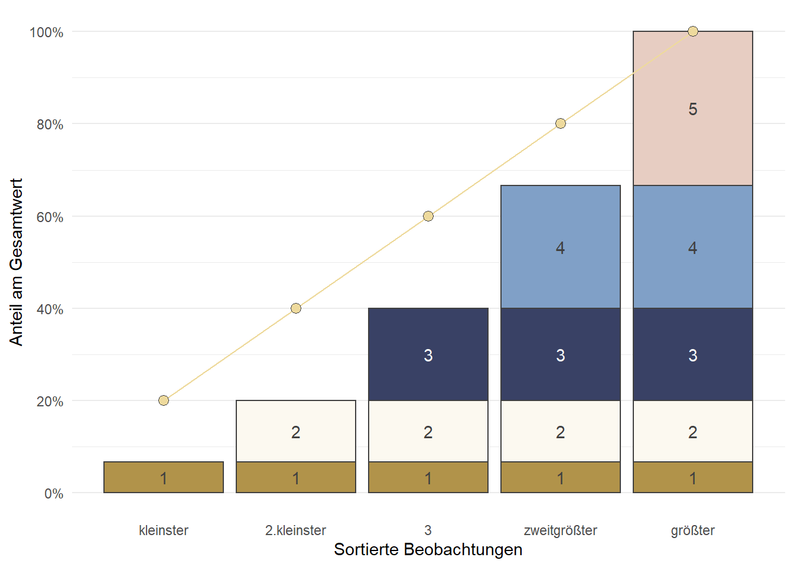

setwd("...") # wo liegt der Datensatz?
a16 <- read.table("allbus2016_kompakt.csv",sep = ";",header = T,stringsAsFactors = F) # einlesen3 Einen Überblick erhalten
In der vorherigen Sitzung hatten wir gesehen, wie wir Datensätze importieren und damit arbeiten. Jede statistische Auswertung eines Datensatzes startet mit einer Beschreibung der Variablen. In dieser Session werden wir sehen, wie wir uns mit Tabellen einen Überblick über die Informationen in einem Datensatz verschaffen können. Wir werden auch in dieser Session mit dem Allbus 2016 arbeiten. Zunächst müssen wir dazu die Daten wieder wie vergangene Woche einlesen:
3.1 Kategoriale Merkmale
3.1.1 Absolute Häufigkeiten
Zentraler Befehl für die Auszählung von Häufigkeiten ist der table() Befehl. Beispielsweise mit der Variable german (Details im Codebuch).
table(a16$german)
-32 1 2 3
3 3238 33 216 Wir bekommen hier also die absoluten Häufigkeiten angezeigt. In der ersten Zeile werden die verschiedenen Ausprägungen aufgelistet, in der zweiten Zeile stehen dann die Häufigkeiten. Aus dem Codebuch erfahren wir, für welche inhaltlichen Kategorien die Zahlencodes jeweils stehen. Bspw. steht 1 dafür, dass der*die Befragte die deutsche Staatsbürgerschaft besitzt. Wir können auch Tabellen unter einem frei wählbaren Namen ablegen und später wieder aufrufen:
t1 <- table(a16$german)
t1
-32 1 2 3
3 3238 33 216 3238 Befragte haben also nur die deutsche Staatsbürgerschaft, 33 Befragte haben die deutsche und noch eine weitere Staatsbürgerschaft. Außerdem enthält der Datensatz 216 Befragte ohne deutsche Staatsbürgerschaft.
Etwas störend ist aber noch die -32. Aus dem Codebuch erfahren wir, dass -32 für fehlende Angabe steht:

3.2 Fehlende Werte in R: NA
Um die Werte mit -32 auch in R als fehlende Angabe zu kennzeichnen, müssen wir sie auf NA setzen. Dazu rufen wir a16$german auf und filtern mit [] nur die Werte für german gleich -32 heraus. Vergangene Woche haben wir kennengelernt, dass wir so spezifische Werte aufrufen können:
a16$german[a16$german == -32] # nur german = -32 aufrufen[1] -32 -32 -32Wenn wir daran mit <- einen neuen Wert angeben, werden die aufgerufenen Werte damit überschrieben - hier überschreiben wir also alle Werte für german == -32 mit NA:
a16$german[a16$german == -32] <- NA
# Wir könnten auch einfach alle Werte kleiner 0 auswählen:
a16$german[a16$german < 0] <- NANA ist in der R der Code für fehlende Angaben, sie werden dann in table() nicht aufgeführt:
table(a16$german)
1 2 3
3238 33 216 Wir können aber mit der Option exclude = NULL die Auszählung von NA explizit anfordern:
table(a16$german, exclude = NULL)
1 2 3 <NA>
3238 33 216 3 Achtung! Die vor dem Ausschluss von -32 abgespeicherte Tabelle t1 ändert sich dadurch nicht:
t1
-32 1 2 3
3 3238 33 216 Das liegt daran, dass bei Aufruf von t1 die abgelegten Werte, so wie sie gespeichert wurden, wieder aufgerufen werden. Es wird keine neue Auszählung vorgenommen! Möchten wir die aktualisierte Tabelle ohne die NA in t1 ablegen, dann müssen wir t1 mit den neuen Werten überschreiben:
t1 <- table(a16$german)
t1
1 2 3
3238 33 216 3.2.1 Kumulierte Häufigkeiten
Mit cumsum() können wir uns die kumulierten Häufigkeiten ausgeben lassen. Dazu wenden wir cumsum auf die Häufigkeitstabelle an:
cumsum(table(a16$german)) 1 2 3
3238 3271 3487 Was sagen die Zahlen jetzt aus? 3271 Befragte haben die deutsche und evtl. noch eine weitere Staatsbürgerschaft. Für 3487 Befragte liegt eine Angabe zur Staatsbürgerschaft vor.
Die Befehlsschachtel aus table() und cumsum() können wir durch ein schrittweises Vorgehen auflösen:
t1 <- table(a16$german) # ablegen wie oben
cumsum(t1) 1 2 3
3238 3271 3487 3.2.2 Relative Häufigkeiten (Anteile)
Neben den absoluten Häufigkeiten können wir uns auch relative Häufigkeitstabellen anzeigen lassen. Dazu nutzen wir den prop.table() Befehl und wenden diesen wiederum entweder auf table() oder direkt auf t1 an:
prop.table(table(a16$german))
1 2 3
0.928591913 0.009463722 0.061944365 prop.table(t1)
1 2 3
0.928591913 0.009463722 0.061944365 Wir sehen hier also, dass 92.859% aller Befragten nur die deutsche Staatsbürgerschaft haben.
Auch die relativen Häufigkeiten können wir uns als kumulierte Werte ausgeben lassen, dazu kombinieren wir prop.table() mit cumsum():
cumsum(prop.table(table(a16$german))) 1 2 3
0.9285919 0.9380556 1.0000000 Diese Befehlsschachtel können wir wieder vermeiden indem wir die absoluten Häufigkeiten aus t1 aufrufen und dann die relativen Häufigkeiten unter t2 ablegen:
t2 <- prop.table(t1) # relative Häufigkeiten unter t2 ablegen
cumsum(t2) # relative kumulierte Häufigkeiten 1 2 3
0.9285919 0.9380556 1.0000000 Wir sehen hier also, dass 93.806% aller Befragten die deutsche und evtl. eine weitere Staatsbürgerschaft haben.
3.2.3 Übersichtstabelle mit allen Kennzahlen
Dies alles lässt sich zu einer Gesamttabelle im Format eines Datensatzes zusammenfassen. Dazu legen wir zunächst die absoluten Häufigkeiten in einem data.frame unter t3 ab:
t1 <- table(a16$german) # wie bereits oben
t3 <- data.frame(t1) # t1 in einen Datensatz umformatieren
t3 Var1 Freq
1 1 3238
2 2 33
3 3 216class(t3) [1] "data.frame"Diesem data.frame fügen wir dann mit t3$... neue Variablen/Spalten hinzu. Während wir uns oben jeweils auf t1 für die absoluten Häufigkeiten bezogen hatten, finden wir diese jetzt innerhalb von t3 in der Spalte Freq:
t3$H <- cumsum(t3$Freq) # kum. absolute Häufigkeiten
t3 # kontrolle Var1 Freq H
1 1 3238 3238
2 2 33 3271
3 3 216 3487t3$f <- prop.table(t3$Freq) # rel. Häufigkeiten
t3 # kontrolle Var1 Freq H f
1 1 3238 3238 0.928591913
2 2 33 3271 0.009463722
3 3 216 3487 0.061944365t3$F <- cumsum(t3$f) # kum. rel. Häufigkeiten
t3 # kontrolle Var1 Freq H f F
1 1 3238 3238 0.928591913 0.9285919
2 2 33 3271 0.009463722 0.9380556
3 3 216 3487 0.061944365 1.0000000Zum Schluss können wir mit colnames die Spalten klar benennen. Dazu rufen wir mit colnames(t3) die Spaltennamen von t3 auf und überschreiben diese dann mit einer Folge an Werten, die wir mit c() angeben:
colnames(t3) <- c("Werte", "h", "H", "f", "F")
t3 Werte h H f F
1 1 3238 3238 0.928591913 0.9285919
2 2 33 3271 0.009463722 0.9380556
3 3 216 3487 0.061944365 1.00000003.3 Kontingenztabellen
In dieser Session beschäftigten wir uns mit den Familienstandsangaben aus der Variable mstat. Wie vergangene Woche müssen wir vorab die negativen Werte (-9, siehe Codebuch) mit NA überschreiben:
table(a16$mstat)
-9 1 2 3 4 5 6 9
2 1919 60 236 316 949 7 1 a16$mstat[a16$mstat < 0] <- NA
table(a16$mstat)
1 2 3 4 5 6 9
1919 60 236 316 949 7 1 Aus Kontingenztabellen erfahren wir, wie häufig Merkmalskombinationen auftreten. Auch für Kontingenztabellen können wir table() verwenden. Zum Beispiel können wir uns eine Tabelle anzeigen lassen, die uns die Häufigkeiten des Familienstatus getrennt nach Geschlechtern zeigt:
table(a16$sex, a16$mstat)
1 2 3 4 5 6 9
1 1011 33 56 133 534 2 0
2 908 27 180 183 415 5 1Wir erkennen aus dieser Tabelle beispielsweise, dass 415 Befragte weiblich (sex=2) und ledig (mstat = 5) sind.
Eine Alternative zu table() ist xtabs(). Hier werden die Spalten und Zeilen beschriftet. Der Übersichtlichkeit halber verwenden wir diese Darstellung, alle Operationen sind aber genauso auch mit table möglich. Da wir mit dieser Kontingenztabelle noch etwas weiter arbeiten werden, legen wir sie unter kt ab:
xtabs(~sex+mstat, data = a16) mstat
sex 1 2 3 4 5 6 9
1 1011 33 56 133 534 2 0
2 908 27 180 183 415 5 1kt <- xtabs(~sex+mstat, data = a16)
kt mstat
sex 1 2 3 4 5 6 9
1 1011 33 56 133 534 2 0
2 908 27 180 183 415 5 13.3.1 Relative Häufigkeiten
Auch hier können wir uns die relativen Häufigkeiten anzeigen lassen, indem wir prop.table() anwenden:
prop.table(kt) mstat
sex 1 2 3 4 5
1 0.2898509174 0.0094610092 0.0160550459 0.0381307339 0.1530963303
2 0.2603211009 0.0077408257 0.0516055046 0.0524655963 0.1189793578
mstat
sex 6 9
1 0.0005733945 0.0000000000
2 0.0014334862 0.0002866972Die hier dargestellten relativen Häufigkeiten beziehen sich jeweils auf die Gesamtzahl der Befragten. Formal dargestellt wird also für die Kombination weiblich (sex=2) und ledig (mstat = 5) die Anzahl ledigen Frauen durch die Anzahl aller Befragten geteilt: \(\frac{Anzahl\,lediger\,Frauen}{Gesamtzahl\,der\,Befragten}\) - Wir können also aus dieser Tabelle ablesen dass 11,9% der Befragten weiblich und ledig sind.
3.3.2 Zeilen- und Spaltenprozente
Wir können diese Tabelle auch mit Zeilen- und Spaltenprozenten anzeigen lassen, indem wir die Option margin verwenden. margin=1 liefert die Zeilenprozente, margin=2 die Spaltenprozente.1
prop.table(kt,margin = 1) mstat
sex 1 2 3 4 5 6 9
1 0.5715 0.0187 0.0317 0.0752 0.3019 0.0011 0.0000
2 0.5282 0.0157 0.1047 0.1065 0.2414 0.0029 0.0006prop.table(kt,margin = 2) mstat
sex 1 2 3 4 5 6 9
1 0.5268 0.5500 0.2373 0.4209 0.5627 0.2857 0.0000
2 0.4732 0.4500 0.7627 0.5791 0.4373 0.7143 1.0000Achtung! Damit ändert sich jeweils die Interpretation der Tabelle! Wir ändern durch margin die Bezugsgröße oder formal ausgedrückt den Nenner:
- Für die Zeilenprozente werden die Werte in Bezug zu den Zeilensummen gesetzt. Also wird die Anzahl der ledigen Frauen ins Verhältnis zur Zahl der befragten Frauen gesetzt: \(\frac{Anzahl\,lediger\,Frauen}{Gesamtzahl\,der\,befragten\,Frauen}\) - Interpretation: “
24,14%der befragten Frauen sind ledig”
- Für die Spaltenprozente werden die Werte in Bezug zu den Spaltensummen gesetzt. Also wird die Anzahl der ledigen Frauen ins Verhältnis zur Zahl der ledigen Befragten gesetzt: \(\frac{Anzahl\,lediger\,Frauen}{Gesamtzahl\,der\,ledigen\,Befragten}\) - Interpretation: “
43,73%der ledigen Befragten sind Frauen”
3.4 Arbeiten mit der Pipe
Unter kt hatten wir das Ergebnis des xtabs-Befehls abgelegt: xtabs(~sex+mstat, data = a16). Wenn wir also alles “ausschreiben”, dann ergibt sich folgender, verschachtelter Befehl:
round( prop.table( xtabs(~sex+mstat, data = a16), margin = 1) ,2) mstat
sex 1 2 3 4 5 6 9
1 0.57 0.02 0.03 0.08 0.30 0.00 0.00
2 0.53 0.02 0.10 0.11 0.24 0.00 0.00Diese Befehlsschachtel können wir mit der sog. Pipe %>% auflösen und besser darstellen. %>% steht dabei einfach für “und dann”. Die Pipe ist unter anderem Teil des Pakets dplyr, welches wir in Zukunft häufiger verwenden werden:
install.packages("dplyr")library(dplyr)Mit der Pipe sieht die Befehlsschachtel dann so aus und wir können sie von links nach rechts lesen:
xtabs(~sex+mstat, data = a16) %>% prop.table(., margin = 1) %>% round(.,2) mstat
sex 1 2 3 4 5 6 9
1 0.57 0.02 0.03 0.08 0.30 0.00 0.00
2 0.53 0.02 0.10 0.11 0.24 0.00 0.00Der Punkt . steht jeweils für das Ergebnis des vorherigen Schritts. Hier also:
- erstelle die Kontingenztabelle und dann (
%>%) - berechne daraus die relativen Häufigkeiten mit
margin = 1und dann (%>%) - runde das Ergebnis auf 2 Nachkommastellen
Tipp:
%>%kann mit STRG+SHIFT+m (cmd+shift+m für Mac) eingefügt werden.
3.5 Metrische Variablen
Das bisherige Beispiel Staatsbürgerschaft (german) bezog sich auf ein kategoriales Merkmal. Für ein metrisches Merkmal, wie zum Beispiel das Geburtsjahr macht eine Häufigkeitstabelle wenig Sinn, da das Geburtsjahr sehr viele Ausprägungen hat und eine Tabelle unübersichtlich wäre - hier nur als Beispiel die ersten 20 Ausprägungen (es gibt insgesamt 77!):
table(a16$age)
-32 18 19 20 21 22 23 24 25 26 27 28 29 30 31 32 33 34 35 36
4 29 41 43 43 41 45 34 40 48 36 49 43 58 49 47 51 65 54 42 Um eine Häufigkeitstabelle zu erstellen müssen wir bei metrischen Merkmalen Klassen bilden. So könnten wir das Alter in Lebensjahrzehnte unterteilen. Zuvor müssen wir wieder die fehlenden Angaben2 überschreiben:
a16$age[a16$age == -32] <- NAUm die Klassen zu bilden, nutzen wir cut() und geben neben der zu unterteilenden Variable mit breaks die Klassengrenzen an. Für die Grenzen können wir seq() verwenden. Darin geben wir zunächst die obere und untere Grenze an und dann die Schrittbreiten. Diese Werte legen wir in einer neuen Variable in a16 ab:
a16$age_zehner <- cut(a16$age, breaks = c(10,20,30,40,50,60,70,80,90,100) )
a16$age_zehner <- cut(a16$age, breaks = seq(10,100,10) ) # kürzer mit seq()Für diese neue Variable können wir mit table() eine Häufigkeitstabelle anfordern:
table(a16$age_zehner)
(10,20] (20,30] (30,40] (40,50] (50,60] (60,70] (70,80] (80,90]
113 437 491 605 710 579 419 127
(90,100]
5 ( bedeutet dabei ausgeschlossen, ] inklusive. Es gibt also 437 Befragte, die über 20 bis inklusive 30 Jahre alt sind.
Wir haben also durch Klassierung aus dem metrischen Merkmal age ein kategoriales Merkmal age_zehner erstellt. Damit können wir dann genauso arbeiten wie oben - zB für die kumulierten relativen Häufigkeiten:
age_tab <- table(a16$age_zehner) # abs Häufigkeiten
age_tab2 <- prop.table(age_tab) # rel Häufigkeiten
cumsum(age_tab2) # kumulieren (10,20] (20,30] (30,40] (40,50] (50,60] (60,70] (70,80]
0.03241538 0.15777395 0.29862306 0.47217441 0.67584624 0.84193919 0.96213425
(80,90] (90,100]
0.99856569 1.00000000 Wir sehen hier so, dass 47.217% aller Befragten 50 Jahre oder jünger sind.
Wir könnten alles auch in einem Befehl zusammen durchführen, das wird aber schnell unübersichtlich:
cumsum(prop.table(table( cut(a16$age, breaks = seq(10,100,10) ) ))) (10,20] (20,30] (30,40] (40,50] (50,60] (60,70] (70,80]
0.03241538 0.15777395 0.29862306 0.47217441 0.67584624 0.84193919 0.96213425
(80,90] (90,100]
0.99856569 1.00000000 3.6 Lage- & Konzentrationsmaße
Für die Beispiele verwenden wir die Angaben aus dem Jahr 2014. Diese Auswahl können wir mit [] treffen:
a14 <- ak[ak$year == 2014,] # basis R3.6.1 Lagemaße
Lagemaße sind statische Kennzahlen zur Beschreibung von metrischen Variablen. Einen Überblick bietet summary():
summary(a14$di05) Min. 1st Qu. Median Mean 3rd Qu. Max.
-50 -7 1800 2051 3000 80400 Natürlich gibt es keine Haushalte, die ein Einkommen von -50 Euro pro Monat haben. Um aussagekräftige Werte zu bekommen, müssen wir diese Werte mit NA überschreiben:
a14$di05[a14$di05 < 0] <- NA # missings überschreibensummary(a14$di05) Min. 1st Qu. Median Mean 3rd Qu. Max. NA's
50 1500 2400 2739 3500 80400 869 Wir können aber auch bestimmte Kennzahlen anfordern sehen uns die Haushaltseinkommen der Befragten (di05) im Allbus 2014 mit Hilfe folgender Befehle an:
- Minimum und Maximum:
min(),max() - arithm. Mittel:
mean() - Median:
median()
min(a14$di05) # kleinster Wert[1] NAWenn eine Variable NA enthält, müssen diese explizit ignoriert werden - ansonsten wird nur NA ausgegeben:
min(a14$di05)[1] NADeshalb müssen wir die Option na.rm = T angeben:
min(a14$di05,na.rm = T)[1] 50max(a14$di05,na.rm = T) #größter Wert[1] 80400mean(a14$di05, na.rm = T)[1] 2739.063median(a14$di05, na.rm = T)[1] 24003.6.2 Streuungsmaße
3.6.2.1 Quantile
Ein Quantil einer Verteilung trennt die Daten so in zwei Teile, dass x% der Daten darunter und 100-x% darüber liegen. Gebräuchlich sind die Quartile, welche die Grenzen für 25%, 50% und 75% angeben. Diese werden auch standardmäßig von quantile() ausgegeben:
quantile(a14$di05,na.rm = T) 0% 25% 50% 75% 100%
50 1500 2400 3500 80400 Musterinterpretation:
- 25% der Befragten haben ein HH-Einkommen von 1500€ oder weniger
- 75% der Befragten haben ein HH-Einkommen von 3500€ oder weniger
Daraus ergibt sich auch:
- 75% der Befragten haben ein HH-Einkommen von 1500€ oder mehr
Wir können aber durch Angabe in den Optionen beliebige Quantilgrenzen anfordern, zB. für die 40%-Quantilgrenze:
quantile(a14$di05,probs = .4, na.rm = T) 40%
2000 In Kombination mit seq() können wir zB. auch die Dezilgrenzen (entlang der Vielfachen von 0,1) anfordern:
quantile(a14$di05,probs = c(0,0.1,0.2,0.3,0.4,0.5,0.6,0.7,0.8,0.9,1), na.rm = T) 0% 10% 20% 30% 40% 50% 60% 70% 80% 90% 100%
50 1000 1400 1723 2000 2400 2800 3200 3800 4800 80400 quantile(a14$di05,probs = seq(0,1,0.1), na.rm = T) 0% 10% 20% 30% 40% 50% 60% 70% 80% 90% 100%
50 1000 1400 1723 2000 2400 2800 3200 3800 4800 80400 3.6.2.2 Interquartilsdistanz und Interdezilsdistanz
Aus den Quantilen leiten sich auch die Interquartilsdistanz und Interdezilsdistanz ab.
Die Interquartilsdistanz ist schlicht die Differenz zwischen dem ersten und dritten Quartil. Genauso ist die Interdezilsdistanz die Differenz zwischen dem neunten und ersten Dezil:
quantile(a14$di05, .75, na.rm = T) - quantile(a14$di05, .25, na.rm = T) # IQR 75%
2000 quantile(a14$di05, .9, na.rm = T) - quantile(a14$di05, .1, na.rm = T) # IDR 90%
3800 Achtung: R zeigt nach der Berechnung der Differenz trotzdem die Beschriftung des Minuenden / des ersten Argumentes an!
3.6.2.3 Varianz, Standardabweichung, Variationskoeffizient
Die häufigste Kennzahl zur Beschreibung von Streuung ist aber die Varianz. Die Varianz ist definiert als die durchschnittliche quadrierte Abweichung vom arith. Mittel: \[var(x) = \frac{\sum_{i=1}^{n} (x_{i}-\bar{x})^2}{n}\]
Was bedeutet diese Formel?
Schauen wir erst in den Zähler des Bruchs: \((x_{i}-\bar{x})^2\) Es geht also um die Abstände der einzelnen Datenpunkte (\(x_{i}\)) zum arithmetischen Mittel (\(\bar{x}\)) - mathematisch die Differenz zwischen den einzelnen Datenpunkten \(x_{i}-\bar{x}\) - hier eingezeichnet als gestrichelte Linien:

Für Punkte, die über dem arith. Mittel liegen, erhalten wir für die Differenz einen positiven Wert (wir ziehen ja jeweils das arith. Mittel vom Wert für den Datenpunkt ab). Für Punkte mit Werten, die kleiner als das arith. Mittel sind, erhalten wir einen negativen Wert.
Würden wir die Abstände (gestrichelten Linien) einfach aufsummieren, erhielten wir als Ergebnis immer Null! Das arithmetische Mittel liegt ja per Definition immer genau “in der Mitte”: die Abstände nach oben sind in der Summe genauso groß wie die Abstände nach unten. Daher wird zunächst jeder Abstand quadriert: \((\bar{x} - x_{i})^2\)
Der Rest der Formel gibt dann an, dass alle quadrierten Differenzen aufsummiert (\(\sum_{i=1}^{n}\)) und dann durch die Anzahl der Beobachtungen geteilt werden (\(\frac{}{n}\))- zusammengefasst hier nochmal die Formel: \[var(x) = \frac{\sum_{i=1}^{n} (x_{i}-\bar{x})^2}{n}\]
Wir können die Varianz mit var() berechnen:
var(a14$di05, na.rm = T) # Varianz[1] 6387969In unseren Datensatz beträgt der Varianz der Haushaltseinkommen also 6.387.969€². Auf der Varianz beruhen noch zwei weitere Streuungsmaße. Die Standardabweichung entspricht der Wurzel der Varianz und hat somit die gleiche Messeinheit wie die Variable (hier EUR). Der Variationskoeffizient entspricht sd/mean und dient dem Vergleich verschiedener Streuungen relativ zum jeweiligen Mittelwert:
sqrt(var(a14$di05, na.rm = T))[1] 2527.443sd(a14$di05, na.rm = T) # Standardabweichung[1] 2527.443sd(a14$di05, na.rm = T) / mean(a14$di05, na.rm = T) # Variationskoeffizient[1] 0.9227402Für alle Streuungsmaße gilt: je größer, desto mehr Streuung (Unterschiede) gibt es in den Daten.
3.6.2.4 Gini-Koeffizient
Zur Beschreibung der Verteilung von Einkommens- und Vermögensdaten wird häufig der Gini-Koeffizient verwendet. Der Gini-Koeffizient beruht auf der Fläche zwischen der Lorenzkurve und der Gleichverteilung. Auf der x-Achse werden die kumulierten Perzentile der Befragten abgetragen, auf der y-Achse die Perzentile des HH-Einkommens:


Den Gini-Koeffizienten können wir mit Gini() aus dem Paket ineq berechnen:
install.packages("ineq") # einmal installieren
library(ineq) # ineq laden
Gini(a14$di05)[1] 0.32863043.6.3 Lage- und Streuungsmaße vergleichen
Häufig werden diese Kennzahlen erst im Vergleich richtig spannend. zB können wir die Einkommensangaben aus den alten und neuen Bundesländern vergleichen:
mean(a14$di05[a14$eastwest == 1], na.rm = T) # alte Bundesländer[1] 2921.727mean(a14$di05[a14$eastwest == 2], na.rm = T) # neue Bundesländer[1] 2347.703In den neuen Bundesländern ist das durchschnittliche HH-Einkommen um 574.024€ niedriger.
median(a14$di05[a14$eastwest == 1], na.rm = T) # alte Bundesländer[1] 2600median(a14$di05[a14$eastwest == 2], na.rm = T) # neue Bundesländer[1] 2000In den neuen Bundesländern ist das Median-HH-Einkommen um 600€ niedriger. Die Variationskoeffizienten zeigen eine größere Streuung im Osten als im Westen:
sd(a14$di05[a14$eastwest == 1], na.rm = T) /
mean(a14$di05[a14$eastwest == 1], na.rm = T)[1] 0.8501129sd(a14$di05[a14$eastwest == 2], na.rm = T) /
mean(a14$di05[a14$eastwest == 2], na.rm = T)[1] 1.097566Wir können auch für das gesamte summary die Differenz zwischen Ost und West bilden:
summary(a14$di05[a14$eastwest == 1], na.rm = T) -
summary(a14$di05[a14$eastwest == 2], na.rm = T) Min. 1st Qu. Median Mean 3rd Qu. Max. NA's
30 400 600 574 800 15400 307 In den neuen Ländern lag das Median-HH-Einkommen um 600€ niedriger als im Westen. Die 25% bzw. 75% Quartilsgrenze lag um 400€ bzw 800€ niedriger, das arith. Mittel war um 574€ niedriger als in den alten Bundesländern.
Gini(a14$di05[a14$eastwest == 1])[1] 0.3182835Gini(a14$di05[a14$eastwest == 2])[1] 0.3346088Wo ist die Ungleichheit nun höher? In Ost oder West?
3.7 Aufgaben 2: Lage- & Konzentrationsmaße
Forschungsfrage: Wie hat sich die Haushaltseinkommensverteilung zwischen 1994 und 2010 entwickelt?
Laden Sie den kumulierten Allbusdatensatz in R (siehe oben).
Erstellen Sie jeweils einen Datensatz für das Befragungsjahr 1994 und 2010 - filtern Sie mit
[]also den kumulierten Datensatz jeweils einmal nach einem Jahr und legen Sie das Ergebnis ina94bzw.a10abBetrachten Sie zunächst für 1994 die Haushaltseinkommensverteilung (Variable
di05)
- Denken Sie daran, die negativen Werte mit
NAzu überschreiben! - Berechnen Sie das arithm. Mittel, den Median, das 25%- und 75%-Quartil sowie die Varianz - was sagen Ihnen die Werte jeweils?
- Berechnen Sie die Interdezildistanz und die Spannweite!
- Berechnen Sie den Gini-Koeffizenten!
- Betrachten Sie dann die Haushaltseinkommensverteilung für 2010 (Variable
di05)
- Denken Sie daran, die negativen Werte mit
NAzu überschreiben! - Berechnen Sie das arithm. Mittel, den Median, das 25%- und 75%-Quartil sowie die Varianz und den Gini-Koeffizienten für alle Fälle im Datensatz für 2010 - was sagen Ihnen die Werte jeweils?
- Berechnen Sie die Interdezildistanz und die Spannweite!
- Berechnen Sie für 1994 getrennt nach Ost und West (Variable
eastwest) - welche Werte erhalten Sie jeweils für folgende Kennzahlen in Ost und West? (Denken Sie ansummary()):
- arithm. Mittel, den Median, das 25%- und 75%-Quartil
- Variationskoeffizient
- Gini-Koeffizient
- Vergleichen Sie diese Ost-West-Unterschiede im Jahr 1994 mit denen für das Jahr 2010. Welche Tendenz können Sie für die Ost-West-Unterschiede erkennen?
3.8 Aufgaben
- Laden Sie den Allbusdatensatz
allbus_kompakt.csvmit dem csv-Import in R:
setwd("...") # wo liegt der Datensatz?
a16 <- read.table("allbus2016_kompakt.csv",sep = ";",header = T,stringsAsFactors = F) # einlesen- Wir interessieren uns für die Variable
gkpol.
- Suchen Sie die Variable im Codebuch: welche Information können Sie dieser Variable entnehmen?
- Welches Skalenniveau hat die Variable? (inhaltliche Frage, keine R-Frage)
- Müssen Sie die Variable erst klassieren um eine sinnvoll interpretierbare Tabelle zu erhalten?
- Lassen Sie sich eine Tabelle mit den absoluten Häufigkeiten anzeigen. Welche ist die häufigste Ausprägung, wofür steht die Kategorie? (Sehen Sie im Codebuch nach)
- Hat die Variable fehlende Werte, die Sie ausschließen sollten? Falls ja, ersetzen Sie diese Werte mit
NAund lassen Sie sich die Tabelle erneut ausgeben.
- Erstellen Sie eine vollständige Häufigkeitstabelle für die Variable
gkpol, welche folgende Informationen enthält:
- absolute Häufigkeiten
- relative Häufigkeiten
- kumulierte absolute Häufigkeiten
- kumulierte relative Häufigkeiten
- Wie viele Befragte leben in einem Ort mit höchstens 49.999 Einwohnern?
- Wie groß ist der Anteil der Befragten, die in einem Ort mit höchstens 99.999 Einwohnern leben?
- Wie groß ist der Anteil der Befragten, die in einem Ort mit mindestens 100.000 Einwohnern leben?
- Erstellen Sie eine Häufigkeitstabelle für das Geburtsjahr der Befragten (
yborn)!
- Welches Skalenniveau hat die Variable? (inhaltliche Frage, keine R-Frage)
- Müssen Sie die Variable erst klassieren um eine sinnvoll interpretierbare Tabelle zu erhalten? Beachten Sie dazu auch die Hinweise am Ende dieses Dokuments. Verwenden Sie die Jahrzehntgrenzen ab 1910.
- Erstellen Sie eine Tabelle welche die absoluten Häufigkeiten anzeigt
- Gibt es fehlende Werte, die Sie mit
NAüberschreiben sollten? - Erstellen Sie eine zweite Version dieser Tabelle mit relativen Häufigkeiten
- Wie groß ist der Anteil der Befragten, die bis 1970 geboren wurden?
- Wie groß ist der Anteil der Befragten, die nach 1980 geboren wurden?
3.9 Profi-Aufgaben
Für alle, die noch etwas mehr machen möchten:
- Runden Sie die Angaben zur relativen Häufigkeit auf 3 Nachkommastellen!
- Lassen Sie sich von R die häufigste Ausprägung für
ybornausgeben - Fügen Sie der vollständigen Häufigkeitstabelle für die Variable
gkpoleine neue Spalte hinzu, welche die Bedeutung der Zahlencodes wiedergibt!
Tipps dazu finden Sie in den Hinweisen am Ende! (Wissen aus diesen Aufgaben wird nicht vorausgesetzt in den kommenden Wochen, aber es hilft natürlich)
3.10 Häufige Fehlermeldungen
Die Arbeit in R ist - wie in jedem Datenanalyseprogramm - ein Hangeln von Fehlermeldung zu Fehlermeldung. Das kann gerade zu Beginn frustrierend sein, bis die tiefere Bedeutung von Fehlermeldungen und deren Ursachen etwas deutlicher werden. Die folgende Auflistung enthält einige der häufigsten Fehlermeldungen und ihre (wahrscheinlichsten) Ursachen. Die Liste lehnt sich stark an die die großartige Zusammenstellung von Nick C. Huntington-Klein an.
Note
Fehlerliste als Lernhilfe
3.10.1 There is no package called
Die Fehlermeldung there is no package called 'XXXX' erscheint, wenn Sie ein Paket bspw. mit library() laden, diese Paket allerdings nicht installiert ist.
The Fix:
- Did you spell the package name correctly? Maybe you do have the package, but you made a typo
- If you spelled it correctly, you may not have installed it. Install it (usually) with
install.packages('packagename')where'packagename'is replaced with the name of the package you actually want.
3.10.2 Could not find function
Die Fehlermeldung could not find function "XXX" weist darauf hin, dass R die genannte Funktion nicht finden kann.
The Fix:
- Did you spell the function name correctly? Maybe you made a typo.
- If the function is in a package, did you load the package? Remember, the package must be re-loaded every time you restart R. If you’re working in RMarkdown, you must load the package inside of your RMarkdown script, since RMarkdown starts from a blank slate.
3.10.3 Object not found
If you get an error like object 'objectname' not found, that means that you’ve made a reference to an object called objectname, but there is no such object to refer to.
The Fix:
- Did you spell the object’s name correctly? Maybe you made a typo.
- Did you remember to create the object before referring to it? For example, the code
mean(x); x <- 1:10would not work, because you try to take the mean ofxbefore it’s been created. If you’re working in RMarkdown, remember that it will start from a blank slate, so you must create all objects inside of your Rmarkdown script.
3.10.4 Object of type ‘closure’ is not subsettable
This is the most aggravating and least-informative R error. “Subsettable” is a hint though - you’re trying to take a subset of something (such as picking an element from a vector, or picking a column from a data set), but the thing you’re doing it to is a “closure” that you can’t do that to.
Most commonly, this is a case of accidentally giving the name of a function where you mean to give the name of a vector or data frame. For example:
mean_data <- tibble(person = c('Me','You'), meanness = c(1000,999))
# Now let's look at that meanness variable, but oops, I'm referring to the function mean() instead of my data mean_data
mean$meanness
# Error in mean$meanness : object of type 'closure' is not subsettableThe Fix:
- See where it says the error is “in” - that’s the place where you’ve referred to the wrong thing. fix it!
3.10.5 Column doesn’t exist
If you get an error like column 'columnname' doesn't exist, that means it’s trying to refer to a column name that is not actually in your data.
The Fix:
- Did you spell the column’s name correctly? Maybe you made a typo.
- Are you referring to the proper dataset? Maybe you created the variable in
my_data2but you’re trying to access it inmy_data. - Does your column name have spaces or other strange characters in it like dashes? If so, in many applications (anywhere you’re not treating the column name as a string) you have to surround the column name in backticks (`) so it knows where the column name starts and ends.
- Did you perhaps drop the column before trying to refer to it? For example, in the below code, the
group_by() %>% summarize()will only keep columns named in thegroup_by()or in thesummarize(). So even though thempgcolumn was there at the start, it no longer is by the time we refer to it.
mtcars %>%
group_by(am) %>%
summarize(mean_hp = mean(hp)) %>%
mutate(hp_by_mpg = mean_hp/mpg)3.10.6 Warning: Package was compiled with R version
If you load a package and get a warning that looks like Warning: packagename was compiled with R version..., that just means that the package was compiled using a slightly newer version of R than yours. It’s generally not a problem as long as you have a somewhat-recent version of R.
The Fix:
- Ignore it
- If you want it to go away, update your R installation.
3.10.7 Rtools is required to build packages from source
If you are installing packages, you may be asked whether you’d like to build packages from source. If you say “Yes”, but you do not have Rtools installed, you will get an error, and the package won’t install properly.
The Fix:
- When asked whether you want to install packages from source, say “No.”
- Install Rtools before installing packages. The easiest way to do this is to install the installr package, and then run
installr::install.rtools().
3.10.8 File does not exist, or No such file or directory
If you get an error like 'filename.csv' does not exist, that means that you’re trying to load a file, but the file is not in the location you’re telling R to look.
The Fix:
- Did you spell the filename correctly? Maybe you made a typo. Or, perhaps, you’re trying to open an Excel fie (
.xlsx) but telling R to look for a CSV (.csv). Or you wrote “file.csv” but the file is “file (1).csv”. - Is the file perhaps open in Excel? Sometimes, Microsoft Office will hold files hostage and not let them be opened in other programs while they’re open in Office. Close the Excel window that has the file open.
- Most often, this is a working directory issue. If you tell R to look for
'filename.csv', it will look for that file in the working directory. Or, if you tell it to look for'data/filename.csv', it will look for a folder called “data” in the working directory, and for filename.csv inside of that. In recent versions of RStudio, the current working directory is listed right on top of the Console. Did you check whether the file is actually in that folder? If you’re running RMarkdown, it will set the working directory to the folder where the .RMD file is located. Did you put the file in the right spot relative to where the RMD is stored? See my video on filepaths for more help.
3.10.9 Klammern, Kommata, Punkte
Just in general, a very large percentage of errors students come to me with occur simply because they made a typo, or didn’t balance their parentheses (pairing each ( with a )).
The Fix:
- If you get an error message of any kind, read the relevant part of the code carefully to make sure you didn’t make a typo
- Avoid coding where you have lots and lots of nested parentheses (this is something that tidyverse piping we learn is intended to avoid). Then, for whatever parentheses you do have, click on each one in RStudio - it will highlight its “partner” or show where there is a missing partner.
3.10.10 Ergebnis NA
Fehlende Werte sind Teil eines jeden Datensatzes. Wir haben oben kennengelernt, dass in R NA für fehlende Angaben steht. R geht mit NA etwas anders um als bspw. Stata; Sobald ein Wert NA ist, gibt R als Ergebnis NA aus:
werte <- c(1,2,NA)
mean(werte)[1] NAmin(werte)[1] NALösung Mit der Option na.rm = TRUE werden alle NA Werte vor der Berechnung ignoriert;
mean(werte,na.rm=TRUE)[1] 1.5min(werte,na.rm=TRUE)[1] 13.10.11 Numerische Variablen und strings
When you put something in quotes, like ‘1’, it will treat it as a string variable - a set of characters to be read as text.
If you want a variable to be treated as a number, do not put it in quotes. This way lies madness.
R is pretty loose, and will allow you to do things like ask whether '2' > 1, and will answer yes. This feels like it’s okay to put the 2 in quotes. But it’s not. What R is doing is saying “oof… I can’t compare a number to a letter, but you’re asking me to. I’ll just convert this number to a string as well, so I’m really doing '2' > '1', and since ‘2’ is alphabetically after ‘1’, that’s true, which is the desired result. Great! Except it also means that '02' > 1 is false, since ‘02’ is alphabetically before ‘1’. Same with '120'>'20' being false. Oops.
The Fix:
- If it’s a number, and you want it treated like a numeric value, don’t put quotes around it.
3.10.12 <-, = und ==
<- is for assigning objects. You can say a <- 1, and that will create an object a with the value 1 inside.
= can also be for assigning objects, just like <-, but is also for assigning arguments and options in functions. In the function mean(), which takes the argument x, I can say mean(x = 1:10) but not mean(x <- 1:10).
== is for checking whether two things are equal. a == 1 will check whether the object a is equal to 1, and will return TRUE if it is, or FALSE otherwise.
Commonly, this will cause problems in cases like this:
data %>%
filter(state = "WA")which we might expect to filter our data to rows that are in the state of Washington, but instead will try to assign a new object state to be equal to "WA".
3.10.13 Einige generelle Tipps zur Fehlervermeidung
- Führen Sie Ihren Code Zeile für Zeile aus. Prüfen Sie zwischen den einzelnen Zeilen die Ausgabe und stellen Sie sicher, dass sie so aussieht, wie Sie es erwarten. Oft treten Fehler auf, weil eine frühere Codezeile nicht das getan hat, was wir beabsichtigt haben. Wenn Sie dort keine Probleme feststellen, machen Sie weiter, bis Sie auf die Fehlermeldung stoßen.
- Lesen Sie die Fehlermeldung und schauen Sie, ob Sie sich einen Reim darauf machen können
- Selbst wenn du die Meldung nicht verstehst, gibt sie dir oft einen Hinweis auf die Ursache des Problems, so dass du weißt, wo du nachschauen musst, um deinen Code zu überprüfen
- Google: oftmals hilft es eine Fehlermeldung oder ein Problem (“How to …. in R”) zu googeln. Neben stackoverflow gibt es unzählige Blogs, Tutorials und andere Hilfeseiten für R in hervorragender Qualität - und sie sind (fast) immer kostenlos!
3.11 Hinweise
3.11.1 cut wählt ein ungünstiges Zahlenformat
cut verwendet für Klassengrenzen mit mehr als 3 Stellen eine wenig intuitive Darstellung. Mit dig.lab können Labels mit mehr als 3 Stellen angefordert werden:
x1 <- c(1212,2121,1212)
table( cut(x1, breaks = c(0,1500,2500)) )
(0,1.5e+03] (1.5e+03,2.5e+03]
2 1 table( cut(x1, breaks = c(0,1500,2500), dig.lab = 4) )
(0,1500] (1500,2500]
2 1 3.11.2 Relative Häufigkeiten runden
Erläuterung: Sie können mit round(x , 3) Werte auf eine gewisse Zahl von Ziffern runden. Die zweite Zahl in der Klammer (nach dem Komma) gibt an, wieviele Dezimalstellen wir möchten:
round(21.12121123,digits = 3)[1] 21.121round(21.12121123,digits = 5)[1] 21.12121round(21.12121123,digits = 0)[1] 21Wir können also die relativen Häufigkeiten runden und so die Tabelle von oben übersichtlicher machen:
t3 Werte h H f F
1 1 3238 3238 0.928591913 0.9285919
2 2 33 3271 0.009463722 0.9380556
3 3 216 3487 0.061944365 1.0000000t3$f <- round(t3$f,3)
t3$F <- round(t3$F,3)
t3 Werte h H f F
1 1 3238 3238 0.929 0.929
2 2 33 3271 0.009 0.938
3 3 216 3487 0.062 1.0003.11.3 Wie kann ich mir in R automatisch die häufigste/seltenste Ausprägung ausgeben lassen?
t1 <- table(a16$age)
t1[which(t1 == max(t1))] # Modus48
87 age=48 ist mit 87 Befragten die häufigste Ausprägung.
3.11.4 Labels als neue Spalte hinzufügen
Wir können die Übersichtstabelle auch noch beschriften, indem wir eine Textvariable hinzufügen:
t3 Werte h H f F
1 1 3238 3238 0.929 0.929
2 2 33 3271 0.009 0.938
3 3 216 3487 0.062 1.000t3$labels <- c("dt Staatsbürgerschaft","dt und andere Staatsbürgerschaft",
"andere Staatsbürgerschaft")
t3 Werte h H f F labels
1 1 3238 3238 0.929 0.929 dt Staatsbürgerschaft
2 2 33 3271 0.009 0.938 dt und andere Staatsbürgerschaft
3 3 216 3487 0.062 1.000 andere Staatsbürgerschaft